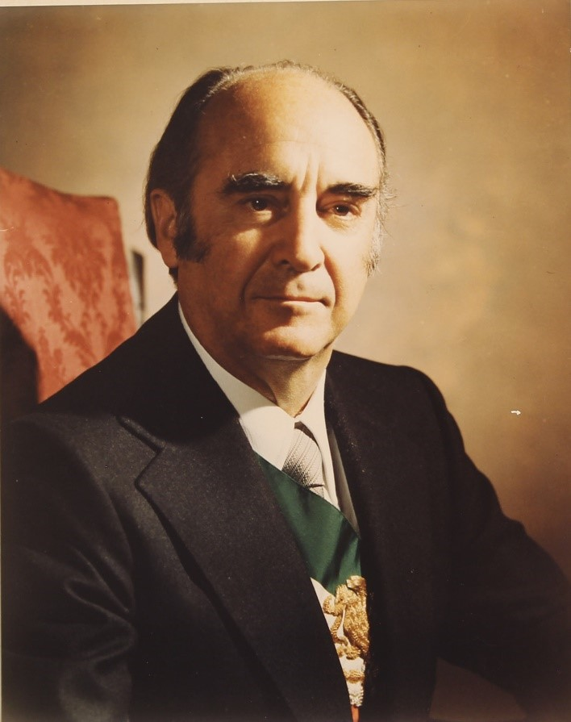

José López Portillo fue un abogado y político mexicano que se desempeñó como presidente de México del 1 de diciembre de 1976 al 30 de noviembre de 1982.
Durante su gobierno México experimentó en apenas un par de años, el más alto crecimiento económico nacional en su historia, seguido de una grave caída —la primera en la segunda mitad del siglo XX— debida a una política monetarista y una dilapidación de los recursos públicos provenientes principalmente de los excedentes del petróleo. La súbita caída de los precios del petróleo en el verano de 1981 desencadenó una crisis económica y financiera que se agravó hacia el final del gobierno de López Portillo, al tiempo que los aumentos en las tasas de interés por parte del gobierno estadounidense incrementaron en forma vertiginosa la deuda externa de México -que había recurrido al financiamiento externo para desarrollar las reservas petroleras que habían sido descubiertas- de forma tal que, hacia el final del sexenio de López Portillo. Emitió los petrobonos con tasas de interés atractivas e indicadas al precio del petróleo que entonces estaba al alza, igualmente y con el mismo propósito permitió que la banca recibiera depósitos en dólares que cubrirán los riesgos cambiarios. Lamentablemente al tomar tanto riesgos el petróleo se devaluó y por lo tanto la moneda mexicana ya que el programa de Portillo era el depender principalmente del petróleo, hundiendo más a México económicamente.
Su política agraria contemplaba el reordenamiento de la economía; había que "afectar cuanto antes todo lo afectable" (de tierras) para dedicar todos los esfuerzos a aumentar la producción.
En materia hacendaria López Portillo prometió a los empresarios una política fiscal estimulante para invertir; manifestó también que se daría mayor progresividad al impuesto sobre la renta a personas físicas, a cambio se alentaría la reinversión de las empresas; para elevar el ahorro doméstico.
Otros hechos destacables de su gobierno fue el permitir la visita a México del Papa a instancias de su madre, profundamente católica. ESto a pesar de ir en conra de la constitución, igualmente chiflaba a sus demás familiares o personas relacionadas con él dandoles puestos o permitirles crear instituciones o edificios, un ejmplo fue su esposa que los que se pusieron en contra de ella fueron encarcelados o asesinados por medio de la ley transformando los caprichos en órdenes gubernamentales
Incrementó el número de miembros a 400, teniendo en cuenta que al menos 100 de ellos deberían ser miembros de partidos de la oposición. Logrando con ello que las demandas de otros partidos más pequeños pudieran ser oídas.